Total: 563 species on the DOF list (incl. 54 escapes/releases)
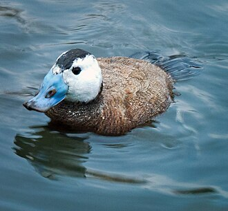
White-headed Duck
Hvidhovedet And
Oxyura leucocephala
 Ruddy Duck
Ruddy Duck
Amerikansk Skarveand
Oxyura jamaicensis
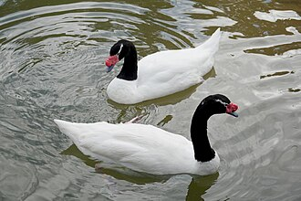
Black-necked Swan
Sorthalset Svane
Cygnus melancoryphus
escape / release
 Mute Swan
Mute Swan
Knopsvane
Cygnus olor
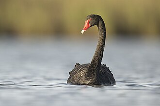
Black Swan
Sortsvane
Cygnus atratus
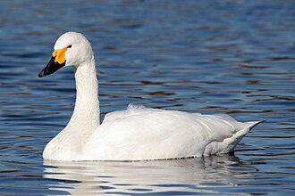
Tundra Swan
Pibesvane
Cygnus columbianus
 Whooper Swan
Whooper Swan
Sangsvane
Cygnus cygnus
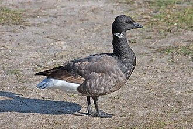
Brant Goose
Knortegås
Branta bernicla
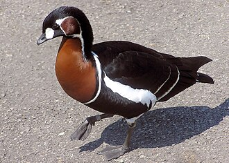
Red-breasted Goose
Rødhalset Gås
Branta ruficollis
 Canada Goose
Canada Goose
Canadagås
Branta canadensis
 Barnacle Goose
Barnacle Goose
Bramgås
Branta leucopsis
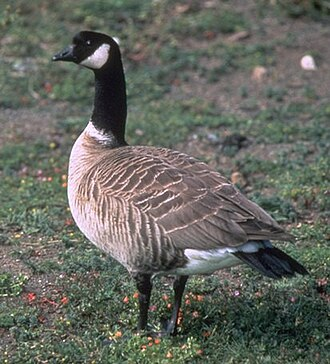
Cackling Goose
Dværgcanadagås
Branta hutchinsii
escape / release
 Bar-headed Goose
Bar-headed Goose
Indisk Gås
Anser indicus
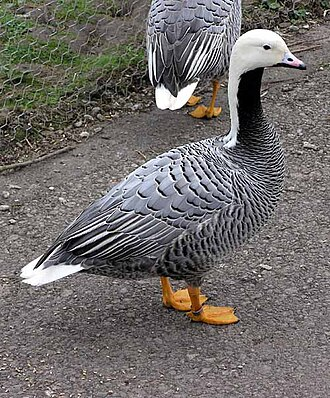
Emperor Goose
Kejsergås
Anser canagicus
escape / release
 Ross's Goose
Ross's Goose
Dværgsnegås
Anser rossii
 Snow Goose
Snow Goose
Snegås
Anser caerulescens
escape / release
 Greylag Goose
Greylag Goose
Grågås
Anser anser
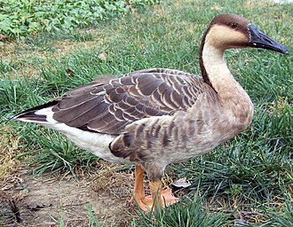
Swan Goose
Svanegås
Anser cygnoides
escape / release
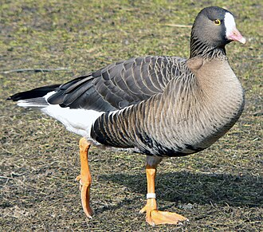
Lesser White-fronted Goose
Dværggås
Anser erythropus
 Greater White-fronted Goose
Greater White-fronted Goose
Blisgås
Anser albifrons
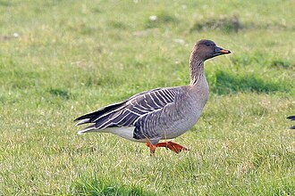
Tundra Bean Goose
Tundrasædgås
Anser serrirostris
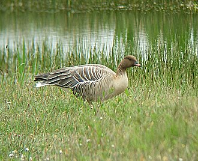
Pink-footed Goose
Kortnæbbet Gås
Anser brachyrhynchus
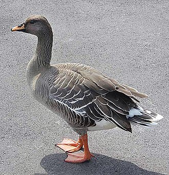
Taiga Bean Goose
Tajgasædgås
Anser fabalis
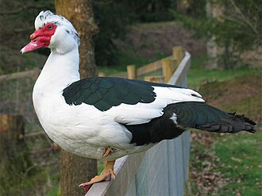
Muscovy Duck
Moskusand
Cairina moschata
escape / release
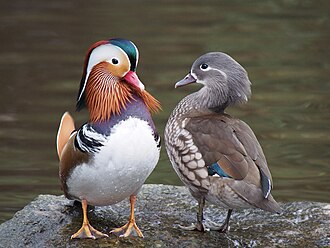
Mandarin Duck
Mandarinand
Aix galericulata
 Wood Duck
Wood Duck
Brudeand
Aix sponsa
escape / release
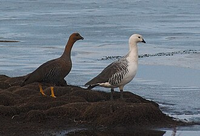
Upland Goose
Magellangås
Chloephaga picta
escape / release
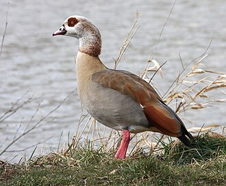
Egyptian Goose
Nilgås
Alopochen aegyptiaca
 Common Shelduck
Common Shelduck
Gravand
Tadorna tadorna
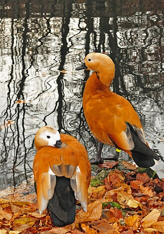
Ruddy Shelduck
Rustand
Tadorna ferruginea
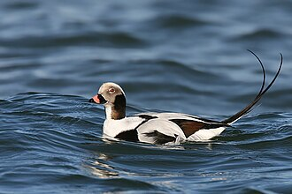
Long-tailed Duck
Havlit
Clangula hyemalis
 Steller's Eider
Steller's Eider
Stellersand
Polysticta stelleri
 King Eider
King Eider
Kongeederfugl
Somateria spectabilis
 Common Eider
Common Eider
Ederfugl
Somateria mollissima
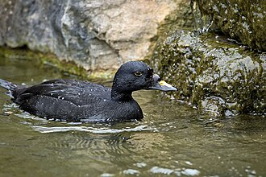
Common Scoter
Sortand
Melanitta nigra
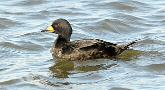
Black Scoter
Amerikansk Sortand
Melanitta americana
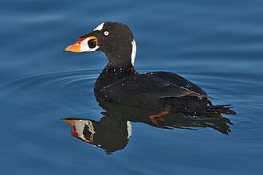
Surf Scoter
Brilleand
Melanitta perspicillata
 Velvet Scoter
Velvet Scoter
Fløjlsand
Melanitta fusca
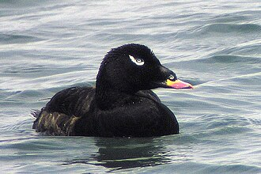
White-winged Scoter
Amerikansk Fløjlsand
Melanitta deglandi
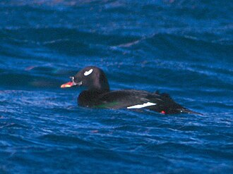
Stejneger's Scoter
Asiatisk Fløjlsand
Melanitta stejnegeri
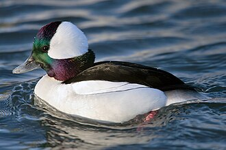
Bufflehead
Bøffeland
Bucephala albeola
escape / release
 Common Goldeneye
Common Goldeneye
Hvinand
Bucephala clangula
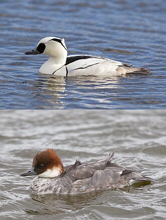
Smew
Lille Skallesluger
Mergellus albellus
 Hooded Merganser
Hooded Merganser
Hjelmskallesluger
Lophodytes cucullatus
escape / release
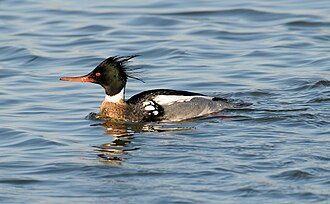
Red-breasted Merganser
Toppet Skallesluger
Mergus serrator
 Common Merganser
Common Merganser
Stor Skallesluger
Mergus merganser
 Marbled Duck
Marbled Duck
Marmorand
Marmaronetta angustirostris
escape / release
 Red-crested Pochard
Red-crested Pochard
Rødhovedet And
Netta rufina
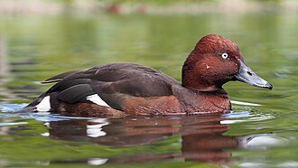
Ferruginous Duck
Hvidøjet And
Aythya nyroca
 Common Pochard
Common Pochard
Taffeland
Aythya ferina
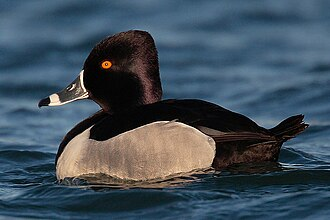
Ring-necked Duck
Halsbåndstroldand
Aythya collaris
 Tufted Duck
Tufted Duck
Troldand
Aythya fuligula
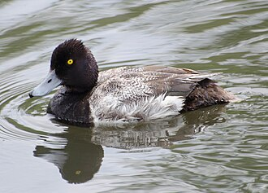
Lesser Scaup
Lille Bjergand
Aythya affinis
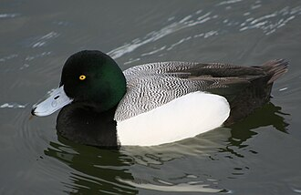
Greater Scaup
Bjergand
Aythya marila
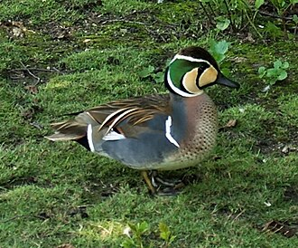
Baikal Teal
Sibirisk Krikand
Sibirionetta formosa
 Garganey
Garganey
Atlingand
Spatula querquedula
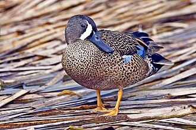
Blue-winged Teal
Blåvinget And
Spatula discors
 Cinnamon Teal
Cinnamon Teal
Kaneland
Spatula cyanoptera
escape / release
 Northern Shoveler
Northern Shoveler
Skeand
Spatula clypeata
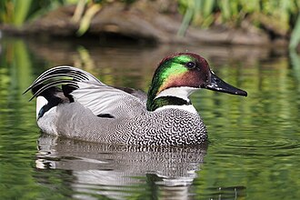
Falcated Duck
Segland
Mareca falcata
escape / release
 Gadwall
Gadwall
Knarand
Mareca strepera
 Eurasian Wigeon
Eurasian Wigeon
Pibeand
Mareca penelope
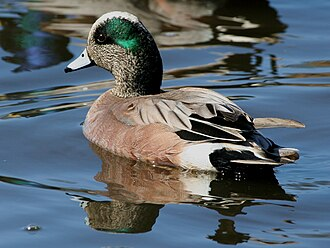
American Wigeon
Amerikansk Pibeand
Mareca americana
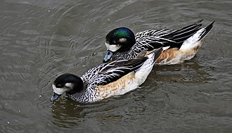
Chiloe Wigeon
Chilepibeand
Mareca sibilatrix
escape / release
 Mallard
Mallard
Gråand
Anas platyrhynchos
 American Black Duck
American Black Duck
Sortbrun And
Anas rubripes
 Northern Pintail
Northern Pintail
Spidsand
Anas acuta
 Eurasian Teal
Eurasian Teal
Krikand
Anas crecca
 Western Capercaillie
Western Capercaillie
Tjur
Tetrao urogallus
escape / release
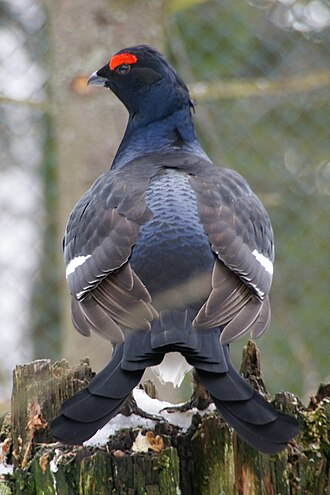
Black Grouse
Urfugl
Lyrurus tetrix
 Grey Partridge
Grey Partridge
Agerhøne
Perdix perdix
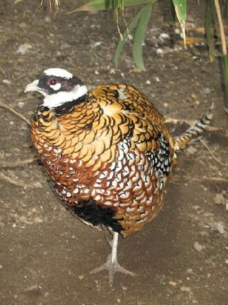
Reeves's Pheasant
Kongefasan
Syrmaticus reevesii
escape / release
 Golden Pheasant
Golden Pheasant
Guldfasan
Chrysolophus pictus
escape / release
 Common Pheasant
Common Pheasant
Fasan
Phasianus colchicus
 Indian Peafowl
Indian Peafowl
Påfugl
Pavo cristatus
escape / release
 Common Quail
Common Quail
Vagtel
Coturnix coturnix
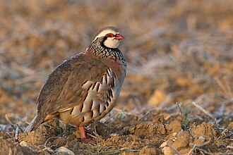
Red-legged Partridge
Rødhøne
Alectoris rufa
escape / release
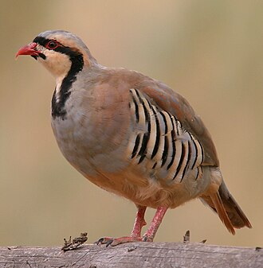
Chukar Partridge
Chukarhøne
Alectoris chukar
escape / release
 Lesser Flamingo
Lesser Flamingo
Lille Flamingo
Phoeniconaias minor
escape / release
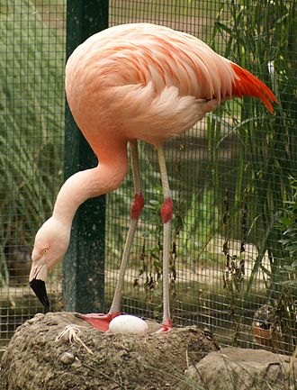
Chilean Flamingo
Chileflamingo
Phoenicopterus chilensis
escape / release
 Greater Flamingo
Greater Flamingo
Stor Flamingo
Phoenicopterus roseus
escape / release
 American Flamingo
American Flamingo
Cariberflamingo
Phoenicopterus ruber
escape / release
 Little Grebe
Little Grebe
Lille Lappedykker
Tachybaptus ruficollis
 Horned Grebe
Horned Grebe
Nordisk Lappedykker
Podiceps auritus
 Red-necked Grebe
Red-necked Grebe
Gråstrubet Lappedykker
Podiceps grisegena
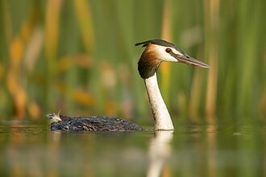
Great Crested Grebe
Toppet Lappedykker
Podiceps cristatus
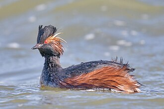
Black-necked Grebe
Sorthalset Lappedykker
Podiceps nigricollis
 Great Bustard
Great Bustard
Stortrappe
Otis tarda
 Macqueen's Bustard
Macqueen's Bustard
Østlig Kravetrappe
Chlamydotis macqueenii
 Little Bustard
Little Bustard
Dværgtrappe
Tetrax tetrax
 Great Spotted Cuckoo
Great Spotted Cuckoo
Skadegøg
Clamator glandarius
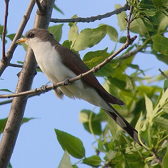
Yellow-billed Cuckoo
Gulnæbbet Gøg
Coccyzus americanus
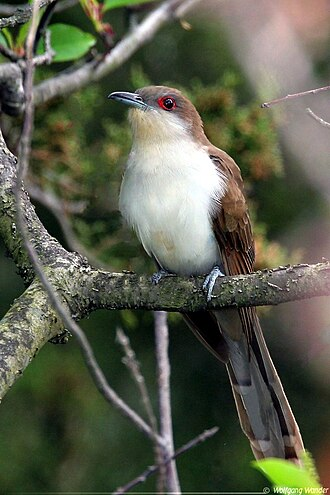
Black-billed Cuckoo
Sortnæbbet Gøg
Coccyzus erythropthalmus
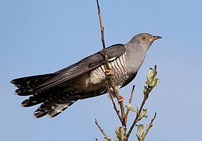
Common Cuckoo
Gøg
Cuculus canorus
 Pallas's Sandgrouse
Pallas's Sandgrouse
Steppehøne
Syrrhaptes paradoxus
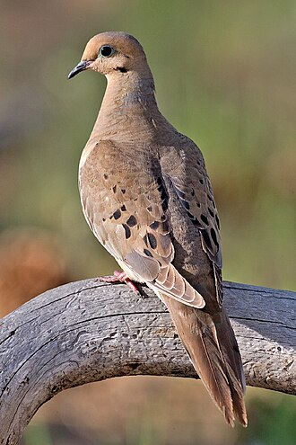
Mourning Dove
Sørgedue
Zenaida macroura
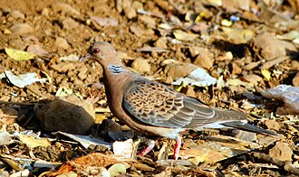
Oriental Turtle Dove
Østlig Turteldue
Streptopelia orientalis
 European Turtle Dove
European Turtle Dove
Turteldue
Streptopelia turtur
 Eurasian Collared Dove
Eurasian Collared Dove
Tyrkerdue
Streptopelia decaocto
 Common Wood Pigeon
Common Wood Pigeon
Ringdue
Columba palumbus
 Rock Dove
Rock Dove
Klippedue (tamdue)
Columba livia
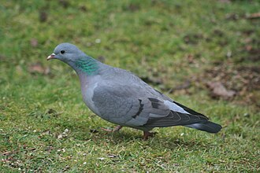
Stock Dove
Huldue
Columba oenas
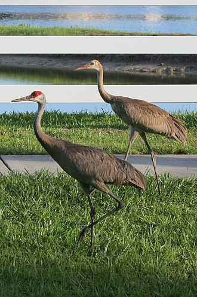
Sandhill Crane
Prærietrane
Antigone canadensis
Demoiselle Crane
Jomfrutrane
Grus virgo
 Red-crowned Crane
Red-crowned Crane
Japansk Trane
Grus japonensis
escape / release
 Common Crane
Common Crane
Trane
Grus grus
 Water Rail
Water Rail
Vandrikse
Rallus aquaticus
 Corn Crake
Corn Crake
Engsnarre
Crex crex
 Spotted Crake
Spotted Crake
Plettet Rørvagtel
Porzana porzana
 Common Moorhen
Common Moorhen
Rørhøne
Gallinula chloropus
 Eurasian Coot
Eurasian Coot
Blishøne
Fulica atra
Allen's Gallinule
Lille Sultanhøne
Porphyrio alleni
Western Swamphen
Sultanhøne
Porphyrio porphyrio
escape / release
 Little Crake
Little Crake
Lille Rørvagtel
Zapornia parva
Baillon's Crake
Dværgrørvagtel
Zapornia pusilla
Eurasian Stone-curlew
Triel
Burhinus oedicnemus
Pied Avocet
Klyde
Recurvirostra avosetta
 Black-winged Stilt
Black-winged Stilt
Stylteløber
Himantopus himantopus
Eurasian Oystercatcher
Strandskade
Haematopus ostralegus
 Grey Plover
Grey Plover
Strandhjejle
Pluvialis squatarola
 European Golden Plover
European Golden Plover
Hjejle
Pluvialis apricaria
American Golden Plover
Amerikansk Hjejle
Pluvialis dominica
 Pacific Golden Plover
Pacific Golden Plover
Sibirisk Hjejle
Pluvialis fulva
Eurasian Dotterel
Pomeransfugl
Eudromias morinellus
 Common Ringed Plover
Common Ringed Plover
Stor Præstekrave
Charadrius hiaticula
Little Ringed Plover
Lille Præstekrave
Thinornis dubius
 Northern Lapwing
Northern Lapwing
Vibe
Vanellus vanellus
 Spur-winged Lapwing
Spur-winged Lapwing
Sporevibe
Vanellus spinosus
escape / release
Sociable Lapwing
Steppevibe
Vanellus gregarius
 White-tailed Lapwing
White-tailed Lapwing
Sumpvibe
Vanellus leucurus
 Caspian Plover
Caspian Plover
Kaspisk Præstekrave
Anarhynchus asiaticus
Tibetan Sand Plover
Tibetansk Præstekrave
Anarhynchus atrifrons
Siberian Sand Plover
Sibirisk Præstekrave
Anarhynchus mongolus
Greater Sand Plover
Ørkenpræstekrave
Anarhynchus leschenaultii
 Kentish Plover
Kentish Plover
Hvidbrystet Præstekrave
Anarhynchus alexandrinus
Upland Sandpiper
Bartramsklire
Bartramia longicauda
Eurasian Whimbrel
Småspove
Numenius phaeopus
Eurasian Curlew
Storspove
Numenius arquata
Bar-tailed Godwit
Lille Kobbersneppe
Limosa lapponica
Black-tailed Godwit
Stor Kobbersneppe
Limosa limosa
Hudsonian Godwit
Canadisk Kobbersneppe
Limosa haemastica
Long-billed Dowitcher
Langnæbbet Sneppeklire
Limnodromus scolopaceus
 Jack Snipe
Jack Snipe
Enkeltbekkasin
Lymnocryptes minimus
Eurasian Woodcock
Skovsneppe
Scolopax rusticola
Great Snipe
Tredækker
Gallinago media
 Common Snipe
Common Snipe
Dobbeltbekkasin
Gallinago gallinago
 Terek Sandpiper
Terek Sandpiper
Terekklire
Xenus cinereus
Common Sandpiper
Mudderklire
Actitis hypoleucos
Spotted Sandpiper
Plettet Mudderklire
Actitis macularius
 Wilson's Phalarope
Wilson's Phalarope
Amerikansk Svømmesneppe
Phalaropus tricolor
 Red Phalarope
Red Phalarope
Thorshane
Phalaropus fulicarius
Red-necked Phalarope
Odinshane
Phalaropus lobatus
 Green Sandpiper
Green Sandpiper
Svaleklire
Tringa ochropus
Marsh Sandpiper
Damklire
Tringa stagnatilis
Wood Sandpiper
Tinksmed
Tringa glareola
Common Redshank
Rødben
Tringa totanus
Lesser Yellowlegs
Lille Gulben
Tringa flavipes
Spotted Redshank
Sortklire
Tringa erythropus
 Common Greenshank
Common Greenshank
Hvidklire
Tringa nebularia
Greater Yellowlegs
Stor Gulben
Tringa melanoleuca
 Ruddy Turnstone
Ruddy Turnstone
Stenvender
Arenaria interpres
Red Knot
Islandsk Ryle
Calidris canutus
Ruff
Brushane
Calidris pugnax
Sharp-tailed Sandpiper
Spidshalet Ryle
Calidris acuminata
Broad-billed Sandpiper
Kærløber
Calidris falcinellus
 Curlew Sandpiper
Curlew Sandpiper
Krumnæbbet Ryle
Calidris ferruginea
Stilt Sandpiper
Klireryle
Calidris himantopus
Red-necked Stint
Rødhalset Ryle
Calidris ruficollis
Temminck's Stint
Temmincksryle
Calidris temminckii
Buff-breasted Sandpiper
Prærieløber
Calidris subruficollis
Sanderling
Sandløber
Calidris alba
Dunlin
Almindelig Ryle
Calidris alpina
Purple Sandpiper
Sortgrå Ryle
Calidris maritima
Baird's Sandpiper
Bairdsryle
Calidris bairdii
Pectoral Sandpiper
Stribet Ryle
Calidris melanotos
Semipalmated Sandpiper
Tyknæbbet Dværgryle
Calidris pusilla
 Little Stint
Little Stint
Dværgryle
Calidris minuta
White-rumped Sandpiper
Hvidrygget Ryle
Calidris fuscicollis
 Cream-colored Courser
Cream-colored Courser
Ørkenløber
Cursorius cursor
Oriental Pratincole
Orientbraksvale
Glareola maldivarum
Black-winged Pratincole
Sortvinget Braksvale
Glareola nordmanni
 Collared Pratincole
Collared Pratincole
Rødvinget Braksvale
Glareola pratincola
Parasitic Jaeger
Almindelig Kjove
Stercorarius parasiticus
 Long-tailed Jaeger
Long-tailed Jaeger
Lille Kjove
Stercorarius longicaudus
Pomarine Jaeger
Mellemkjove
Stercorarius pomarinus
Great Skua
Storkjove
Stercorarius skua
 Atlantic Puffin
Atlantic Puffin
Lunde
Fratercula arctica
Black Guillemot
Tejst
Cepphus grylle
 Razorbill
Razorbill
Alk
Alca torda
Little Auk
Søkonge
Alle alle
Thick-billed Murre
Polarlomvie
Uria lomvia
Common Murre
Lomvie
Uria aalge
Bridled Tern
Brilleterne
Onychoprion anaethetus
Little Tern
Dværgterne
Sternula albifrons
Caspian Tern
Rovterne
Hydroprogne caspia
Gull-billed Tern
Sandterne
Gelochelidon nilotica
 Whiskered Tern
Whiskered Tern
Hvidskægget Terne
Chlidonias hybrida
White-winged Tern
Hvidvinget Terne
Chlidonias leucopterus
 Black Tern
Black Tern
Sortterne
Chlidonias niger
 Sandwich Tern
Sandwich Tern
Splitterne
Thalasseus sandvicensis
Elegant Tern
Aztekerterne
Thalasseus elegans
 Arctic Tern
Arctic Tern
Havterne
Sterna paradisaea
Common Tern
Fjordterne
Sterna hirundo
Roseate Tern
Rosenterne
Sterna dougallii
 Little Gull
Little Gull
Dværgmåge
Hydrocoloeus minutus
Ross's Gull
Rosenmåge
Rhodostethia rosea
 Black-legged Kittiwake
Black-legged Kittiwake
Ride
Rissa tridactyla
 Sabine's Gull
Sabine's Gull
Sabinemåge
Xema sabini
Ivory Gull
Ismåge
Pagophila eburnea
 Slender-billed Gull
Slender-billed Gull
Tyndnæbbet Måge
Chroicocephalus genei
 Bonaparte's Gull
Bonaparte's Gull
Bonapartemåge
Chroicocephalus philadelphia
 Black-headed Gull
Black-headed Gull
Hættemåge
Chroicocephalus ridibundus
Laughing Gull
Lattermåge
Leucophaeus atricilla
 Franklin's Gull
Franklin's Gull
Præriemåge
Leucophaeus pipixcan
Pallas's Gull
Stor Sorthovedet Måge
Ichthyaetus ichthyaetus
Audouin's Gull
Audouinsmåge
Ichthyaetus audouinii
Mediterranean Gull
Sorthovedet Måge
Ichthyaetus melanocephalus
 Ring-billed Gull
Ring-billed Gull
Ringnæbbet Måge
Larus delawarensis
 Common Gull
Common Gull
Stormmåge
Larus canus
 Caspian Gull
Caspian Gull
Kaspisk Måge
Larus cachinnans
 European Herring Gull
European Herring Gull
Sølvmåge
Larus argentatus
 Yellow-legged Gull
Yellow-legged Gull
Middelhavssølvmåge
Larus michahellis
 Armenian Gull
Armenian Gull
Armensk Måge
Larus armenicus
 Great Black-backed Gull
Great Black-backed Gull
Svartbag
Larus marinus
Glaucous Gull
Gråmåge
Larus hyperboreus
Lesser Black-backed Gull
Sildemåge
Larus fuscus
Glaucous-winged Gull
Gråvinget Måge
Larus glaucescens
Iceland Gull
Hvidvinget Måge
Larus glaucoides
 Red-throated Loon
Red-throated Loon
Rødstrubet Lom
Gavia stellata
 Common Loon
Common Loon
Islom
Gavia immer
Yellow-billed Loon
Hvidnæbbet Lom
Gavia adamsii
Pacific Loon
Stillehavslom
Gavia pacifica
 Black-throated Loon
Black-throated Loon
Sortstrubet Lom
Gavia arctica
Black-browed Albatross
Sortbrynet Albatros
Thalassarche melanophris
 Wilson's Storm Petrel
Wilson's Storm Petrel
Wilsons Stormsvale
Oceanites oceanicus
 European Storm Petrel
European Storm Petrel
Lille Stormsvale
Hydrobates pelagicus
 Leach's Storm Petrel
Leach's Storm Petrel
Stor Stormsvale
Hydrobates leucorhous
Northern Fulmar
Mallemuk
Fulmarus glacialis
 Scopoli's Shearwater
Scopoli's Shearwater
Scopolis Skråpe
Calonectris diomedea
 Cory's Shearwater
Cory's Shearwater
Atlantisk Skråpe
Calonectris borealis
Sooty Shearwater
Sodfarvet Skråpe
Ardenna grisea
 Great Shearwater
Great Shearwater
Storskråpe
Ardenna gravis
Manx Shearwater
Almindelig Skråpe
Puffinus puffinus
Yelkouan Shearwater
Middelhavsskråpe
Puffinus yelkouan
 Audubon's Shearwater
Audubon's Shearwater
Tropeskråpe
Puffinus lherminieri
Black Stork
Sort Stork
Ciconia nigra
 White Stork
White Stork
Hvid Stork
Ciconia ciconia
 Magnificent Frigatebird
Magnificent Frigatebird
Pragtfregatfugl
Fregata magnificens
Northern Gannet
Sule
Morus bassanus
 Brown Booby
Brown Booby
Brun Sule
Sula leucogaster
Pygmy Cormorant
Dværgskarv
Microcarbo pygmaeus
European Shag
Topskarv
Gulosus aristotelis
 Great Cormorant
Great Cormorant
Skarv
Phalacrocorax carbo
Glossy Ibis
Sort Ibis
Plegadis falcinellus
Northern Bald Ibis
Eremitibis
Geronticus eremita
escape / release
 African Spoonbill
African Spoonbill
Afrikansk Skestork
Platalea alba
escape / release
Eurasian Spoonbill
Skestork
Platalea leucorodia
 African Sacred Ibis
African Sacred Ibis
Hellig Ibis
Threskiornis aethiopicus
escape / release
 Great White Pelican
Great White Pelican
Hvid Pelikan
Pelecanus onocrotalus
escape / release
Pink-backed Pelican
Rosapelikan
Pelecanus rufescens
escape / release
 Dalmatian Pelican
Dalmatian Pelican
Krøltoppet Pelikan
Pelecanus crispus
 Eurasian Bittern
Eurasian Bittern
Rørdrum
Botaurus stellaris
American Bittern
Amerikansk Rørdrum
Botaurus lentiginosus
Little Bittern
Dværghejre
Botaurus minutus
 Little Egret
Little Egret
Silkehejre
Egretta garzetta
 Black-crowned Night Heron
Black-crowned Night Heron
Nathejre
Nycticorax nycticorax
Squacco Heron
Tophejre
Ardeola ralloides
 Great Egret
Great Egret
Sølvhejre
Ardea alba
 Western Cattle Egret
Western Cattle Egret
Kohejre
Ardea ibis
Purple Heron
Purpurhejre
Ardea purpurea
 Grey Heron
Grey Heron
Fiskehejre
Ardea cinerea
 European Nightjar
European Nightjar
Natravn
Caprimulgus europaeus
Egyptian Nightjar
Ørkennatravn
Caprimulgus aegyptius
White-throated Needletail
Tornhalesejler
Hirundapus caudacutus
 Alpine Swift
Alpine Swift
Alpesejler
Tachymarptis melba
Pacific Swift
Orientsejler
Apus pacificus
 White-rumped Swift
White-rumped Swift
Kaffersejler
Apus caffer
 Little Swift
Little Swift
Lille Sejler
Apus affinis
 Common Swift
Common Swift
Mursejler
Apus apus
Pallid Swift
Gråsejler
Apus pallidus
 Western Barn Owl
Western Barn Owl
Slørugle
Tyto alba
Boreal Owl
Perleugle
Aegolius funereus
 Little Owl
Little Owl
Kirkeugle
Athene noctua
Northern Hawk-Owl
Høgeugle
Surnia ulula
 Eurasian Pygmy Owl
Eurasian Pygmy Owl
Spurveugle
Glaucidium passerinum
 Eurasian Scops Owl
Eurasian Scops Owl
Dværghornugle
Otus scops
Short-eared Owl
Mosehornugle
Asio flammeus
 Long-eared Owl
Long-eared Owl
Skovhornugle
Asio otus
 Snowy Owl
Snowy Owl
Sneugle
Bubo scandiacus
 Eurasian Eagle-Owl
Eurasian Eagle-Owl
Stor Hornugle
Bubo bubo
 Tawny Owl
Tawny Owl
Natugle
Strix aluco
 Turkey Vulture
Turkey Vulture
Kalkungrib
Cathartes aura
escape / release
Western Osprey
Fiskeørn
Pandion haliaetus
 Black-winged Kite
Black-winged Kite
Blå Glente
Elanus caeruleus
Bearded Vulture
Lammegrib
Gypaetus barbatus
escape / release
 Egyptian Vulture
Egyptian Vulture
Ådselgrib
Neophron percnopterus
 European Honey Buzzard
European Honey Buzzard
Hvepsevåge
Pernis apivorus
Crested Honey Buzzard
Tophvepsevåge
Pernis ptilorhynchus
 Cinereous Vulture
Cinereous Vulture
Munkegrib
Aegypius monachus
Griffon Vulture
Gåsegrib
Gyps fulvus
 Rüppell's Vulture
Rüppell's Vulture
Rüppells Grib
Gyps rueppelli
escape / release
Short-toed Snake Eagle
Slangeørn
Circaetus gallicus
Greater Spotted Eagle
Stor Skrigeørn
Clanga clanga
 Lesser Spotted Eagle
Lesser Spotted Eagle
Lille Skrigeørn
Clanga pomarina
Booted Eagle
Dværgørn
Hieraaetus pennatus
Steppe Eagle
Steppeørn
Aquila nipalensis
Eastern Imperial Eagle
Kejserørn
Aquila heliaca
 Golden Eagle
Golden Eagle
Kongeørn
Aquila chrysaetos
 Bonelli's Eagle
Bonelli's Eagle
Høgeørn
Aquila fasciata
 Eurasian Sparrowhawk
Eurasian Sparrowhawk
Spurvehøg
Accipiter nisus
Northern Goshawk
Duehøg
Astur gentilis
Pallid Harrier
Steppehøg
Circus macrourus
 Hen Harrier
Hen Harrier
Blå Kærhøg
Circus cyaneus
 Northern Harrier
Northern Harrier
Amerikansk Kærhøg
Circus hudsonius
 Montagu's Harrier
Montagu's Harrier
Hedehøg
Circus pygargus
 Western Marsh Harrier
Western Marsh Harrier
Rørhøg
Circus aeruginosus
 Red Kite
Red Kite
Rød Glente
Milvus milvus
Black Kite
Sort Glente
Milvus migrans
 Steller's Sea Eagle
Steller's Sea Eagle
Beringhavørn
Haliaeetus pelagicus
escape / release
 White-tailed Eagle
White-tailed Eagle
Havørn
Haliaeetus albicilla
 Bald Eagle
Bald Eagle
Hvidhovedet Havørn
Haliaeetus leucocephalus
escape / release
Rough-legged Buzzard
Fjeldvåge
Buteo lagopus
 Common Buzzard
Common Buzzard
Musvåge
Buteo buteo
Long-legged Buzzard
Ørnevåge
Buteo rufinus
Eurasian Hoopoe
Hærfugl
Upupa epops
European Roller
Ellekrage
Coracias garrulus
 European Bee-eater
European Bee-eater
Biæder
Merops apiaster
 Blue-cheeked Bee-eater
Blue-cheeked Bee-eater
Grøn Biæder
Merops persicus
 Common Kingfisher
Common Kingfisher
Isfugl
Alcedo atthis
 Eurasian Wryneck
Eurasian Wryneck
Vendehals
Jynx torquilla
 European Green Woodpecker
European Green Woodpecker
Grønspætte
Picus viridis
 Black Woodpecker
Black Woodpecker
Sortspætte
Dryocopus martius
Northern Flicker
Guldspætte
Colaptes auratus
 Eurasian Three-toed Woodpecker
Eurasian Three-toed Woodpecker
Tretået Spætte
Picoides tridactylus
 Middle Spotted Woodpecker
Middle Spotted Woodpecker
Mellemflagspætte
Dendrocoptes medius
 Great Spotted Woodpecker
Great Spotted Woodpecker
Stor Flagspætte
Dendrocopos major
 Lesser Spotted Woodpecker
Lesser Spotted Woodpecker
Lille Flagspætte
Dryobates minor
 Lesser Kestrel
Lesser Kestrel
Lille Tårnfalk
Falco naumanni
 Common Kestrel
Common Kestrel
Tårnfalk
Falco tinnunculus
American Kestrel
Amerikansk Tårnfalk
Falco sparverius
 Red-footed Falcon
Red-footed Falcon
Aftenfalk
Falco vespertinus
Merlin
Dværgfalk
Falco columbarius
 Eleonora's Falcon
Eleonora's Falcon
Eleonorafalk
Falco eleonorae
 Eurasian Hobby
Eurasian Hobby
Lærkefalk
Falco subbuteo
Peregrine Falcon
Vandrefalk
Falco peregrinus
Lanner Falcon
Lannerfalk
Falco biarmicus
escape / release
Gyrfalcon
Jagtfalk
Falco rusticolus
 Saker Falcon
Saker Falcon
Slagfalk
Falco cherrug
Cockatiel
Nymfeparakit
Nymphicus hollandicus
escape / release
 Monk Parakeet
Monk Parakeet
Munkeparakit
Myiopsitta monachus
escape / release
Military Macaw
Soldaterara
Ara militaris
escape / release
 Alexandrine Parakeet
Alexandrine Parakeet
Stor Alexanderparakit
Psittacula eupatria
escape / release
 Rose-ringed Parakeet
Rose-ringed Parakeet
Alexanderparakit
Psittacula krameri
escape / release
Budgerigar
Undulat
Melopsittacus undulatus
escape / release
Red-eyed Vireo
Rødøjet Vireo
Vireo olivaceus
 Eurasian Golden Oriole
Eurasian Golden Oriole
Pirol
Oriolus oriolus
 Great Grey Shrike
Great Grey Shrike
Stor Tornskade
Lanius excubitor
Lesser Grey Shrike
Rosenbrystet Tornskade
Lanius minor
 Woodchat Shrike
Woodchat Shrike
Rødhovedet Tornskade
Lanius senator
Red-backed Shrike
Rødrygget Tornskade
Lanius collurio
Red-tailed Shrike
Turkestantornskade
Lanius phoenicuroides
Long-tailed Shrike
Langhalet Tornskade
Lanius schach
Brown Shrike
Brun Tornskade
Lanius cristatus
 Iberian Magpie
Iberian Magpie
Iberisk Blåskade
Cyanopica cooki
escape / release
 Eurasian Jay
Eurasian Jay
Skovskade
Garrulus glandarius
 Eurasian Magpie
Eurasian Magpie
Husskade
Pica pica
 Spotted Nutcracker
Spotted Nutcracker
Nøddekrige
Nucifraga caryocatactes
Daurian Jackdaw
Sibirisk Allike
Coloeus dauuricus
 Western Jackdaw
Western Jackdaw
Allike
Coloeus monedula
 Rook
Rook
Råge
Corvus frugilegus
 Pied Crow
Pied Crow
Broget Krage
Corvus albus
escape / release
Northern Raven
Ravn
Corvus corax
 Carrion Crow
Carrion Crow
Krage
Corvus corone
 Eurasian Penduline Tit
Eurasian Penduline Tit
Pungmejse
Remiz pendulinus
 Eurasian Blue Tit
Eurasian Blue Tit
Blåmejse
Cyanistes caeruleus
 Great Tit
Great Tit
Musvit
Parus major
Coal Tit
Sortmejse
Periparus ater
European Crested Tit
Topmejse
Lophophanes cristatus
Marsh Tit
Sumpmejse
Poecile palustris
Willow Tit
Fyrremejse
Poecile montanus
 Bearded Reedling
Bearded Reedling
Skægmejse
Panurus biarmicus
 Woodlark
Woodlark
Hedelærke
Lullula arborea
 Eurasian Skylark
Eurasian Skylark
Sanglærke
Alauda arvensis
 Crested Lark
Crested Lark
Toplærke
Galerida cristata
Horned Lark
Bjerglærke
Eremophila alpestris
 Greater Short-toed Lark
Greater Short-toed Lark
Korttået Lærke
Calandrella brachydactyla
 Bimaculated Lark
Bimaculated Lark
Østlig Kalanderlærke
Melanocorypha bimaculata
Zitting Cisticola
Cistussanger
Cisticola juncidis
Icterine Warbler
Gulbug
Hippolais icterina
Melodious Warbler
Spottesanger
Hippolais polyglotta
 Booted Warbler
Booted Warbler
Lille Gulbug
Iduna caligata
 Eastern Olivaceous Warbler
Eastern Olivaceous Warbler
Bleg Gulbug
Iduna pallida
 Sedge Warbler
Sedge Warbler
Sivsanger
Acrocephalus schoenobaenus
Aquatic Warbler
Vandsanger
Acrocephalus paludicola
 Paddyfield Warbler
Paddyfield Warbler
Lille Rørsanger
Acrocephalus agricola
 Blyth's Reed Warbler
Blyth's Reed Warbler
Buskrørsanger
Acrocephalus dumetorum
 Marsh Warbler
Marsh Warbler
Kærsanger
Acrocephalus palustris
Eurasian Reed Warbler
Rørsanger
Acrocephalus scirpaceus
 Great Reed Warbler
Great Reed Warbler
Drosselrørsanger
Acrocephalus arundinaceus
Gray's Grasshopper Warbler
Stor Græshoppesanger
Helopsaltes fasciolatus
Lanceolated Warbler
Stribet Græshoppesanger
Locustella lanceolata
River Warbler
Flodsanger
Locustella fluviatilis
Savi's Warbler
Savisanger
Locustella luscinioides
Common Grasshopper Warbler
Græshoppesanger
Locustella naevia
 Sand Martin
Sand Martin
Digesvale
Riparia riparia
 Eurasian Crag Martin
Eurasian Crag Martin
Klippesvale
Ptyonoprogne rupestris
 Barn Swallow
Barn Swallow
Landsvale
Hirundo rustica
Common House Martin
Bysvale
Delichon urbicum
 Red-breasted Swallow
Red-breasted Swallow
Rødbrystet Svale
Cecropis semirufa
 Red-rumped Swallow
Red-rumped Swallow
Rødrygget Svale
Cecropis rufula
Red-rumped Swallow
Amursvale
Cecropis daurica
 Long-tailed Tit
Long-tailed Tit
Halemejse
Aegithalos caudatus
Cetti's Warbler
Cettisanger
Cettia cetti
 Wood Warbler
Wood Warbler
Skovsanger
Phylloscopus sibilatrix
Western Bonelli's Warbler
Bjergløvsanger
Phylloscopus bonelli
Yellow-browed Warbler
Hvidbrynet Løvsanger
Phylloscopus inornatus
 Hume's Leaf Warbler
Hume's Leaf Warbler
Himalayasanger
Phylloscopus humei
 Pallas's Leaf Warbler
Pallas's Leaf Warbler
Fuglekongesanger
Phylloscopus proregulus
 Radde's Warbler
Radde's Warbler
Schwarz Løvsanger
Phylloscopus schwarzi
 Sulphur-bellied warbler
Sulphur-bellied warbler
Sinkiangløvsanger
Phylloscopus griseolus
Dusky Warbler
Brun Løvsanger
Phylloscopus fuscatus
Willow Warbler
Løvsanger
Phylloscopus trochilus
Iberian Chiffchaff
Iberisk Gransanger
Phylloscopus ibericus
Common Chiffchaff
Gransanger
Phylloscopus collybita
Green Warbler
Grøn Sanger
Phylloscopus nitidus
Two-barred Warbler
Østlig Lundsanger
Phylloscopus plumbeitarsus
Greenish Warbler
Lundsanger
Phylloscopus trochiloides
Arctic Warbler
Nordsanger
Phylloscopus borealis
 Garden Warbler
Garden Warbler
Havesanger
Sylvia borin
 Eurasian Blackcap
Eurasian Blackcap
Munk
Sylvia atricapilla
Barred Warbler
Høgesanger
Curruca nisoria
 Lesser Whitethroat
Lesser Whitethroat
Gærdesanger
Curruca curruca
Asian Desert Warbler
Asiatisk Ørkensanger
Curruca nana
Common Whitethroat
Tornsanger
Curruca communis
 Marmora's Warbler
Marmora's Warbler
Sardinsk Sanger
Curruca sarda
Dartford Warbler
Provencesanger
Curruca undata
 Rüppell's Warbler
Rüppell's Warbler
Sortstrubet Sanger
Curruca ruppeli
Sardinian Warbler
Sorthovedet Sanger
Curruca melanocephala
 Moltoni's Warbler
Moltoni's Warbler
Makisanger
Curruca subalpina
 Western Subalpine Warbler
Western Subalpine Warbler
Iberisk Sanger
Curruca iberiae
Eastern Subalpine Warbler
Rødstrubet Sanger
Curruca cantillans
Bohemian Waxwing
Silkehale
Bombycilla garrulus
Common Firecrest
Rødtoppet Fuglekonge
Regulus ignicapilla
 Goldcrest
Goldcrest
Fuglekonge
Regulus regulus
Eurasian Nuthatch
Spætmejse
Sitta europaea
 Eurasian Treecreeper
Eurasian Treecreeper
Træløber
Certhia familiaris
 Short-toed Treecreeper
Short-toed Treecreeper
Korttået Træløber
Certhia brachydactyla
 Eurasian Wren
Eurasian Wren
Gærdesmutte
Nannus troglodytes
Eurasian Wren (ssp. fridariensis/hirtensis/borealis)
Gærdesmutte, Nordatlantisk (fridariensis/hirtensis/borealis)
Nannus troglodytes ssp. fridariensis/hirtensis/borealis
 Spotless Starling
Spotless Starling
Ensfarvet Stær
Sturnus unicolor
 Common Starling
Common Starling
Stær
Sturnus vulgaris
 Rosy Starling
Rosy Starling
Rosenstær
Pastor roseus
 Red-winged Starling
Red-winged Starling
Rødvinget Sortstær
Onychognathus morio
escape / release
 White-throated Dipper
White-throated Dipper
Vandstær
Cinclus cinclus
White's Thrush
Gulddrossel
Zoothera aurea
Swainson's Thrush
Olivenskovdrossel
Catharus ustulatus
Hermit Thrush
Eremitdrossel
Catharus guttatus
Mistle Thrush
Misteldrossel
Turdus viscivorus
Song Thrush
Sangdrossel
Turdus philomelos
 Redwing
Redwing
Vindrossel
Turdus iliacus
 Common Blackbird
Common Blackbird
Solsort
Turdus merula
 Fieldfare
Fieldfare
Sjagger
Turdus pilaris
 Ring Ouzel
Ring Ouzel
Ringdrossel
Turdus torquatus
 Black-throated Thrush
Black-throated Thrush
Sortstrubet Drossel
Turdus atrogularis
Dusky Thrush
Brundrossel
Turdus eunomus
Eyebrowed Thrush
Gråstrubet Drossel
Turdus obscurus
American Robin
Vandredrossel
Turdus migratorius
 Asian Brown Flycatcher
Asian Brown Flycatcher
Brun Fluesnapper
Muscicapa dauurica
 Spotted Flycatcher
Spotted Flycatcher
Grå Fluesnapper
Muscicapa striata
 European Robin
European Robin
Rødhals
Erithacus rubecula
Thrush Nightingale
Nattergal
Luscinia luscinia
Common Nightingale
Sydlig Nattergal
Luscinia megarhynchos
 Bluethroat
Bluethroat
Blåhals
Luscinia svecica
Siberian Rubythroat
Rubinnattergal
Calliope calliope
Rufous-tailed Robin
Manchurernattergal
Larvivora sibilans
 Red-breasted Flycatcher
Red-breasted Flycatcher
Lille Fluesnapper
Ficedula parva
Taiga Flycatcher
Tajgafluesnapper
Ficedula albicilla
 Collared Flycatcher
Collared Flycatcher
Hvidhalset Fluesnapper
Ficedula albicollis
 European Pied Flycatcher
European Pied Flycatcher
Broget Fluesnapper
Ficedula hypoleuca
Red-flanked Bluetail
Blåstjert
Tarsiger cyanurus
Black Redstart
Husrødstjert
Phoenicurus ochruros
Common Redstart
Rødstjert
Phoenicurus phoenicurus
Common Rock Thrush
Stendrossel
Monticola saxatilis
Whinchat
Bynkefugl
Saxicola rubetra
Siberian Stonechat
Sibirisk Bynkefugl
Saxicola maurus
 European Stonechat
European Stonechat
Sortstrubet Bynkefugl
Saxicola rubicola
 Desert Wheatear
Desert Wheatear
Ørkenstenpikker
Oenanthe deserti
Western Black-eared Wheatear
Vestlig Middelhavsstenpikker
Oenanthe hispanica
 Pied Wheatear
Pied Wheatear
Nonnestenpikker
Oenanthe pleschanka
Eastern Black-eared Wheatear
Østlig Middelhavsstenpikker
Oenanthe melanoleuca
Northern Wheatear
Stenpikker
Oenanthe oenanthe
 Isabelline Wheatear
Isabelline Wheatear
Isabellastenpikker
Oenanthe isabellina
White-crowned Wheatear
Hvidkronet Stenpikker
Oenanthe leucopyga
Alpine Accentor
Alpejernspurv
Prunella collaris
 Black-throated Accentor
Black-throated Accentor
Sortstrubet Jernspurv
Prunella atrogularis
 Dunnock
Dunnock
Jernspurv
Prunella modularis
 Siberian Accentor
Siberian Accentor
Sibirisk Jernspurv
Prunella montanella
White-winged Snowfinch
Snefinke
Montifringilla nivalis
Eurasian Tree Sparrow
Skovspurv
Passer montanus
Spanish Sparrow
Spansk Spurv
Passer hispaniolensis
 House Sparrow
House Sparrow
Gråspurv
Passer domesticus
Grey Wagtail
Bjergvipstjert
Motacilla cinerea
Western Yellow Wagtail
Gul Vipstjert
Motacilla flava
 Citrine Wagtail
Citrine Wagtail
Citronvipstjert
Motacilla citreola
 Eastern Yellow Wagtail
Eastern Yellow Wagtail
Sibirisk Vipstjert
Motacilla tschutschensis
White Wagtail
Hvid Vipstjert
Motacilla alba
 Blyth's Pipit
Blyth's Pipit
Mongolsk Piber
Anthus godlewskii
Tawny Pipit
Markpiber
Anthus campestris
Richard's Pipit
Storpiber
Anthus richardi
 Tree Pipit
Tree Pipit
Skovpiber
Anthus trivialis
 Olive-backed Pipit
Olive-backed Pipit
Tajgapiber
Anthus hodgsoni
Red-throated Pipit
Rødstrubet Piber
Anthus cervinus
 Meadow Pipit
Meadow Pipit
Engpiber
Anthus pratensis
 European Rock Pipit
European Rock Pipit
Skærpiber
Anthus petrosus
 Water Pipit
Water Pipit
Bjergpiber
Anthus spinoletta
Brambling
Kvækerfinke
Fringilla montifringilla
 Common Chaffinch
Common Chaffinch
Bogfinke
Fringilla coelebs
 Hawfinch
Hawfinch
Kernebider
Coccothraustes coccothraustes
Common Rosefinch
Karmindompap
Carpodacus erythrinus
Siberian Long-tailed Rosefinch
Langhalet Rosenfinke
Carpodacus sibiricus
escape / release
Pallas's Rosefinch
Rosenfinke
Carpodacus roseus
escape / release
 Pine Grosbeak
Pine Grosbeak
Krognæb
Pinicola enucleator
 Eurasian Bullfinch
Eurasian Bullfinch
Dompap
Pyrrhula pyrrhula
 Trumpeter Finch
Trumpeter Finch
Ørkendompap
Bucanetes githagineus
 Desert Finch
Desert Finch
Ørkenfinke
Rhodospiza obsoleta
escape / release
 European Greenfinch
European Greenfinch
Grønirisk
Chloris chloris
 Grey-capped Greenfinch
Grey-capped Greenfinch
Brunirisk
Chloris sinica
escape / release
 Twite
Twite
Bjergirisk
Linaria flavirostris
Common Linnet
Tornirisk
Linaria cannabina
 Common Redpoll
Common Redpoll
Gråsisken
Acanthis flammea
Two-barred Crossbill
Hvidvinget Korsnæb
Loxia leucoptera
 Parrot Crossbill
Parrot Crossbill
Stor Korsnæb
Loxia pytyopsittacus
 Red Crossbill
Red Crossbill
Lille Korsnæb
Loxia curvirostra
 European Goldfinch
European Goldfinch
Stillits
Carduelis carduelis
 Atlantic Canary
Atlantic Canary
Kanariefugl
Serinus canaria
escape / release
 European Serin
European Serin
Gulirisk
Serinus serinus
 Eurasian Siskin
Eurasian Siskin
Grønsisken
Spinus spinus
 Snow Bunting
Snow Bunting
Snespurv
Plectrophenax nivalis
Lapland Longspur
Lapværling
Calcarius lapponicus
 Common Reed Bunting
Common Reed Bunting
Rørspurv
Schoeniclus schoeniclus
 Yellow-browed Bunting
Yellow-browed Bunting
Gulbrynet Værling
Schoeniclus chrysophrys
Yellow-breasted Bunting
Gulbrystet Værling
Schoeniclus aureolus
Little Bunting
Dværgværling
Schoeniclus pusillus
Rustic Bunting
Pileværling
Schoeniclus rusticus
Black-headed Bunting
Hætteværling
Melophus melanocephalus
 Red-headed Bunting
Red-headed Bunting
Brunhovedet Værling
Melophus bruniceps
Corn Bunting
Bomlærke
Emberiza calandra
 Rock Bunting
Rock Bunting
Klippeværling
Emberiza cia
 Grey-necked Bunting
Grey-necked Bunting
Bjerghortulan
Emberiza buchanani
Cinereous Bunting
Gulgrå Værling
Emberiza cineracea
 Ortolan Bunting
Ortolan Bunting
Hortulan
Emberiza hortulana
Cirl Bunting
Gærdeværling
Emberiza cirlus
 Pine Bunting
Pine Bunting
Hvidkindet Værling
Emberiza leucocephalos
Yellowhammer
Gulspurv
Emberiza citrinella
 Dark-eyed Junco
Dark-eyed Junco
Mørkøjet Junco
Junco hyemalis
White-throated Sparrow
Hvidstrubet Spurv
Zonotrichia albicollis
White-crowned Sparrow
Hvidkronet Spurv
Zonotrichia leucophrys
American Yellow Warbler
Gul Sanger
Setophaga aestiva
 Song Sparrow
Song Sparrow
Sangspurv
Melospiza melodia
 Great-tailed Grackle
Great-tailed Grackle
Kragegrackel
Quiscalus mexicanus
escape / release
Blackpoll Warbler
Stribet Sanger
Setophaga striata
Rose-breasted Grosbeak
Rosenbrystet Kernebider
Pheucticus ludovicianus
Indigo Bunting
Indigofinke
Passerina cyanea
escape / release